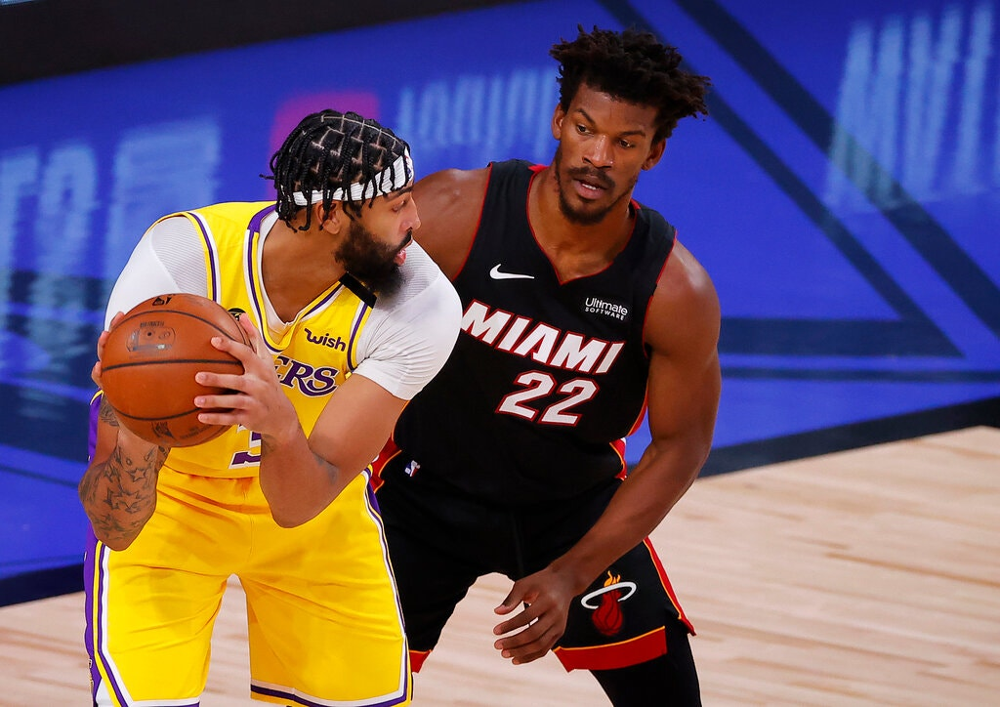
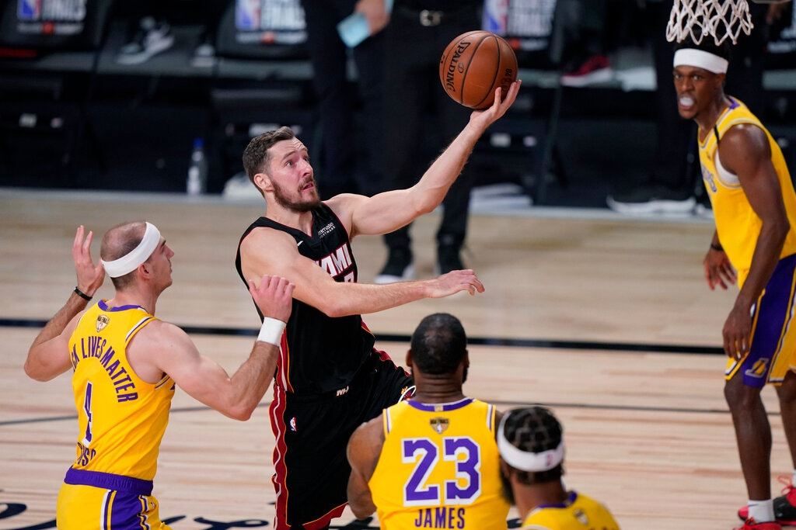

The Miami Heat Were Hot. Now They’re Hurting.
A wave of injuries helped wipe out Miami’s big lead over the Los Angeles Lakers in Game 1 of the N.B.A. finals. The fallout now threatens the series.
By Scott Cacciola
LAKE BUENA VISTA, Fla. — Before it all began to fall apart for the Miami Heat, Erik Spoelstra, the team’s coach, reflected on a time before it all came together.
About an hour before the Heat faced the Los Angeles Lakers in Game 1 of the N.B.A. finals on Wednesday night, Spoelstra recalled the pledge that he had made to Goran Dragic, the team’s starting point guard, when they traded for Dragic in 2015. The pledge was that the Heat would contend for championships.
It took a bit longer than either of them had hoped. Chris Bosh, who figured to be a central figure in that title hunt, had his career cut short by blood clots, and Miami scraped by for a few seasons as a middling team. It was not until Wednesday that the Heat, after emerging from the Eastern Conference as the fifth seed, found themselves back on the biggest stage.
“I feel like I’ve been in 50 playoff games with Goran because of all these years where we have been fighting for our lives for six weeks a season to make the playoffs, and you get to know somebody, how they handle those stressful situations,” Spoelstra said on Wednesday, adding: “We just never really did our part where the general public could see him in this kind of competitive environment. But I’m just thrilled that he’s actually getting this opportunity with this team to do what we have seen behind the scenes now for six years.”
Sports, though, can be cruel. In the first half of his first career appearance in the finals, in a largely empty arena in the league’s bubble at Walt Disney World, Dragic injured his left foot. He remained on the court for a few possessions before departing for the locker room. He had torn his plantar fascia, a ligament that runs along the bottom of the foot.
For Miami, the injury seemed to have the effect of a cloudburst. Jimmy Butler rolled his left ankle late in the first half. Bam Adebayo strained the left side of his neck. The team’s three best players — all injured, all before the series was a game old.
The Lakers led by as many as 32 points in 116-98 win , and now there are questions ahead of Game 2 on Friday night about whether the Heat can summon the resolve — against the odds — to make the best-of-seven series competitive.
“You have to go through your plan A, plan B, plan C,” Spoelstra said.
On Thursday, the Heat listed Dragic and Adebayo, their All-Star center, as “doubtful” to play in Game 2. Butler, who played through his injury in Game 1, said he was “OK.”
Butler, after a sleepless night, said he had spoken with Dragic, 34, who had been playing so well for the Heat in the postseason, averaging 20.9 points and 4.7 assists entering the finals.
“You can hear that pain in his voice, of him feeling like he may have let us down,” said Butler, who had a wrap on his left ankle and a large bandage covering a scrape on his right knee. “But he did not, and I want him to know that. He’s carried us to this point, and it’s only our duty to pay that back to him right now.”
It was all the more jarring for the Heat considering how well the game had started for them. They made nine of their first 12 field-goal attempts and ran out to a 23-10 lead. But the Lakers found their bearings, remembered that they employed Anthony Davis and proceeded to wallop the Heat.
Davis, so dominant for the Lakers throughout their postseason run, finished with 34 points and nine rebounds. Even before Adebayo left the game with his injury, it was clear that Davis would cause huge problems for the Heat: too big, too long, too versatile.
‘One of the Worst, Strangest Years’: An N.B.A. Season Like No Other
Coronavirus and conflict, protest and mourning: Five people tell what they learned about basketball, and themselves, in a turbulent season that changed the N.B.A.
Sept. 30, 2020And there was LeBron James, who collected 25 points, 13 rebounds and 9 assists to position himself three wins from his fourth championship — and his first with the Lakers, whom he joined before the start of last season.
You remember last season, right? James injured his groin, and the Lakers missed the playoffs. James spent part of the subsequent summer filming “Space Jam 2,” which only played into a popular narrative that James had moved to Los Angeles because he wanted to cultivate his off-the-court interests.
The Lakers’ current playoff run — one bolstered by the off-season addition of Davis — has silenced any lingering criticism. The partnership that James and Davis have formed has been enormously successful.
“We’re not jealous of each other,” James said. “We know who we are. We know what we’re about. We want the best for one another every single day.”
Now, facing a hobbled opponent, James did not so much say that he would guard against complacency as suggest that he had banished the concept from his brain entirely.
After Game 1, he recalled a formative experience. In 2011, James was playing in the finals for the Heat when teammate Dwyane Wade made a 3-pointer in front of the Dallas Mavericks’ bench. The basket gave the Heat a large lead and put them on the cusp of a two-games-to-none lead in the series. But the Mavericks went on a huge run, stole the game and later won the series. It was a sequence of events, James said, that “burns me to this day.”
“I always talk about the best teacher in life is experience,” he said, “and I’ve experienced a lot.”
Other players, like Dragic, spend the bulk of their careers working to reach the finals — only to have that experience cut short. Nothing is promised. In his own way, deep into his 17th season, James understands that better than most.